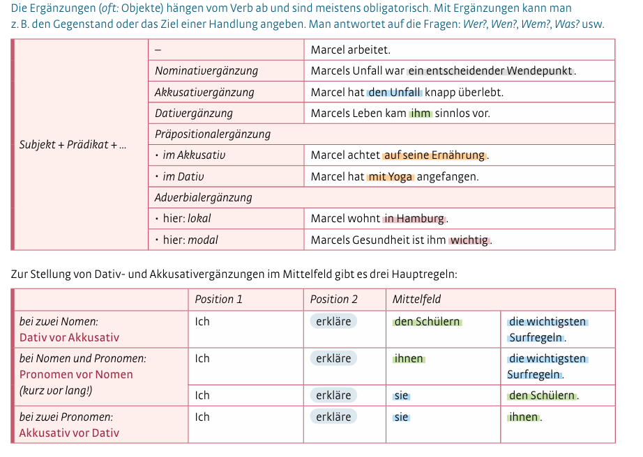

Saltar la navegación

Ergänzen Sie die Ergänzungen in Klammern in der richtigen Reihenfolge.
1. Die Geschichte meines Erfolgs?
Ich erzähle Rellenar huecos (1):JXUwMDExJXUwMDIxJXUwMDA2JXUwMDBiJXUwMDBiJXUwMDRlJXUwMDQ0JXUwMDBkJXUwMDBjJXUw MDQ1JXUwMDY3JXUwMDIyJXUwMDE2JXUwMDEwJXUwMDBiJXUwMDAxJXUwMDBhJXUwMDBiJXUwMDFj JXUwMDEx gern. (Ihnen- die Geschichte)
2. Der Weg zum Erfolg?
Ich zeige Rellenar huecos (2):JXUwMDM1JXUwMDA4JXUwMDBjJXUwMDA3JXUwMDBiJXUwMDBiJXUwMDRlJXUwMDZiJXUwMDNlJXUw MDFiJXUwMDBhJXUwMDAxJXUwMDBiJXUwMDRlJXUwMDQ0JXUwMDAxJXUwMDBiJXUwMDRlJXUwMDc3 JXUwMDMyJXUwMDAy . (den Weg - meinen Kunden)
3. Ein Rezept, wie der Neuanfang garantiert klappt?
Ich gebe Rellenar huecos (3):JXUwMDExJXUwMDIxJXUwMDA2JXUwMDBiJXUwMDBiJXUwMDRlJXUwMDQ0JXUwMDA1JXUwMDEyJXUw MDUzJXUwMDcyJXUwMDM3JXUwMDFmJXUwMDFmJXUwMDE1JXUwMDA0 . (das Rezept - Ihnen)
4. Übungen, die Mut machen?
Ich bringe Rellenar huecos (4):JXUwMDExJXUwMDIxJXUwMDA2JXUwMDBiJXUwMDBiJXUwMDRlJXUwMDQ4JXUwMDAxJXUwMDA1JXUw MDBhJXUwMDE0JXUwMDE3JXUwMDBjJXUwMDBhJXUwMDBiJXUwMDBkJXUwMDQ1JXUwMGZjJXUwMGJl JXUwMDE3JXUwMDFiJXUwMDA5JXUwMDAyJXUwMDBi bei. (Ihnen- hilfreiche Übungen
Habilitar JavaScript
Creado con eXeLearning (Ventana nueva)